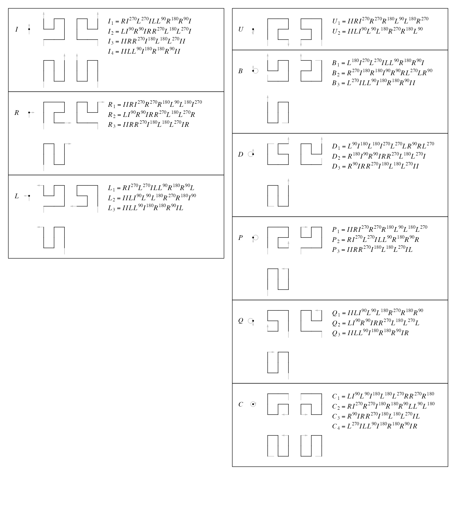
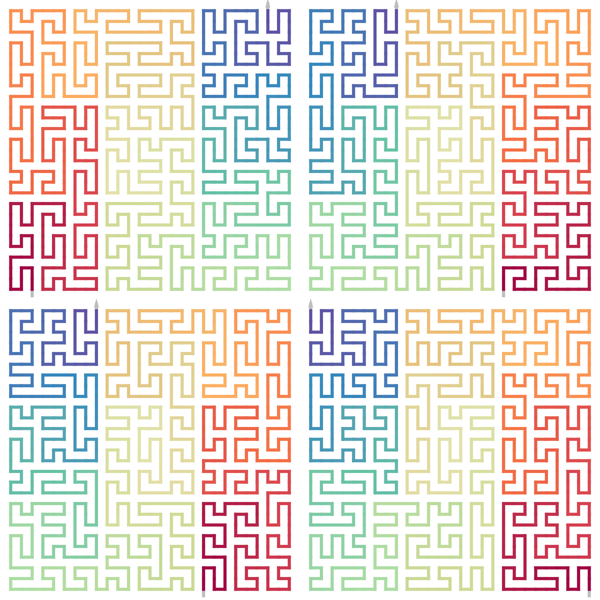

vignettes/all_3x3_curve.Rmd
all_3x3_curve.RmdWe can merge base patterns from the Peano curve and the Meander curve to construct a universe set of base patterns for the general 3x3 space-filling curves.
Please note, base patterns from the Peano curve only contain the “vertical” patterns, and those from the Meander curve only contain the “forward” pattenrs (they are the major rules for the two types of curves). “Horizontal” and “backward” patterns can be obtained by flipping.

Note, J from the Peano curve is put into the I base group. And the vertical Peano patterns can also be expanded for the B/D/P/Q/C bases.
Since now all Peano base units and Meander base units are included, the transverse paths from level \(k\) to level \(k+1\) are massive. Let’s try to expand \(I_1^{(1)}\) to the next level.
p = p = SFC_RULES_3x3_COMBINED@rules$I[[3]]
p## A sequence of 9 base patterns.
## I(0)I(0)R(0)R(270) I(180)L(180)L(270)I(0)
## I(0)
pl = all_transverse_paths(SFC_RULES_3x3_COMBINED, p)
length(pl)## [1] 400The following plot shows all transverse paths for the sequence I(0)I(0)R(0)R(270)I(180)L(180)L(270)I(0)I(0) to level 2.
plot_transverse_paths(SFC_RULES_3x3_COMBINED, p)And the numbers of total transverse paths for other level-1 base patterns:
for(b in c("I", "R", "L", "U", "B", "D", "P", "Q", "C")) {
for(i in seq_along(SFC_RULES_3x3_COMBINED@rules[[b]])) {
pl = all_transverse_paths(
SFC_RULES_3x3_COMBINED,
SFC_RULES_3x3_COMBINED@rules[[b]][[i]])
cat(b, "_", i, ": ", length(pl), "\n", sep = "")
}
}## I_1: 216
## I_2: 216
## I_3: 400
## I_4: 400
## R_1: 288
## R_2: 153
## R_3: 300
## L_1: 153
## L_2: 288
## L_3: 300
## U_1: 204
## U_2: 204
## B_1: 216
## B_2: 153
## B_3: 300
## D_1: 153
## D_2: 216
## D_3: 300
## P_1: 228
## P_2: 171
## P_3: 300
## Q_1: 228
## Q_2: 171
## Q_3: 300
## C_1: 171
## C_2: 171
## C_3: 225
## C_4: 225In the Peano curve, all level-1 patterns have the corner values of (1, 1) or (2, 2). In the following, we can see the Peano curve only has one specific transverse path on any level \(k\).
plot_transverse_paths(SFC_RULES_3x3_COMBINED, p, type = "11|22")For the Meander curve, the corner values are always (1, 2) or (2, 1). There are always two transverse paths for any given \(k\). If the transverse code for the first base pattern is determined, the whole transverse path is then fixed.
plot_transverse_paths(SFC_RULES_3x3_COMBINED, p, type = "12|21")Let’s make an assumption: for a general 3x3 curve that expands from level \(k\) with \(n\) points (\(n = 9^{k}\)) to level \(k+1\), the total number of transverse paths denoted as \(t_k\) is:
\[ t_k \approx \alpha^n \]
Since in a 3x3 curve, base patterns have either three or four transverse codes, let’s consider a sequence with \(n\) base patterns of \(I\). Let’s start from the first base pattern. From the second one, a base pattern can connect to two following base patterns (e.g. (1, 1) at position 1 can only connect to (2, 1) and (2, 2)), then the total number of transverse paths with a fixed position 1 is \(2^{n-1}\). By taking all four base patterns at position 1, the final number of transverse paths for \(n\) base patterns are \(4 \cdot 2^{n-1} = 2 \cdot 2^n\), which is the possible maximal number of total transverse paths for a sequence of length \(n\).
Then
\[ \begin{align*} \alpha^{n} &= 2 \cdot 2^n \\ \alpha &= 2 \cdot 2^{1/n} \\ \end{align*} \]
Normally \(n\) is huge, which results in:
\[ \alpha_\mathrm{max} \approx 2 \]
For the minimal case, there is only one transverse path for \(n\) base patterns, thus
\[\alpha_\mathrm{min} = 1\]
So \(\alpha\) is approximately a number between 1 and 2.
Next let’s calculate the number of different forms of 3x3 curve on each level:
\[ \begin{align*} n_1 &= n_0 \\ n_2 &= n_1 \cdot t_1 = n_1 \cdot \alpha_1^{9^1}\\ & ... \\ n_k &= n_{k-1} \cdot t_{k-1} = n_{k-1} \cdot \alpha_{k-1}^{9^{k-1}}\\ \end{align*} \]
Then we can calculate \(n_k\) as
\[ n_k = n_0 \cdot \alpha_1^{9^1} \cdot \alpha_2^{9^2} ... \alpha_{k-1}^{9^{k-1}} \]
If we approximately take all \(\alpha_i\) are similar:
\[ n_k \approx n_0 \cdot \alpha^{\frac{9^k -9}{8}} \]
where \(n_0 = 3\) or \(n_0 = 4\).
By also considering the 9 flipped rules and the 4 rotations, and each unit on different level can be flipped (vertically/horizontally/by diagonal) independently, the final number of all possible forms of 3x3 curves is approximate
\[ 9 \cdot 4 \cdot n_0 \cdot \alpha^{\frac{9^k -9}{8}} \cdot 2^{\frac{9^k - 1}{8}} \]
sfc_3x3_combined() generates a curve where on each level, a transverse path is randomly selected.
draw_multiple_curves(
sfc_3x3_combined("I", level = 3),
sfc_3x3_combined("I", level = 3),
sfc_3x3_combined("I", level = 3),
sfc_3x3_combined("I", level = 3),
nrow = 2
)